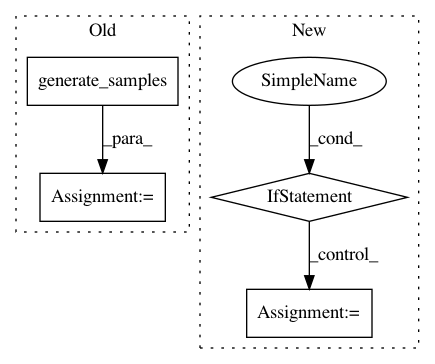

d59156c9157ff3aab5b3cb24b3cc65bb9269004c,ml/rl/test/gridworld/test_gridworld_sac.py,TestGridworldSAC,_test_sac_trainer,#TestGridworldSAC#Any#Any#,125
Before Change
def _test_sac_trainer(self, use_2_q_functions=False, use_gpu=False):
environment = GridworldContinuous()
samples = environment.generate_samples(100000, 0.25, DISCOUNT)
trainer = self.get_sac_trainer(
environment, self.get_sac_parameters(use_2_q_functions), use_gpu
)
// evaluator = GridworldSACEvaluator(environment, True, DISCOUNT, False, samples)
evaluator = GridworldContinuousEvaluator(
environment,
assume_optimal_policy=False,
gamma=DISCOUNT,
use_int_features=False,
)
// FIXME: need to be able to export w/o calling .cpu()
// critic_predictor = self.get_predictor(trainer, environment)
// self.assertGreater(evaluator.evaluate(critic_predictor), 0.15)
tdps = environment.preprocess_samples(
samples, self.minibatch_size, use_gpu=use_gpu
)
// critic_predictor = trainer.predictor(actor=False)
// evaluator.evaluate_critic(critic_predictor)
After Change
self.test_save_load = False
self.tolerance_threshold = 0.12
if use_gpu:
self.run_pre_training_eval = False
self.evaluate_gridworld(environment, evaluator, trainer, exporter, use_gpu)
// Make sure actor predictor works
actor_predictor = self.get_actor_predictor(trainer, environment)
In pattern: SUPERPATTERN
Frequency: 3
Non-data size: 4
Instances
Project Name: facebookresearch/Horizon
Commit Name: d59156c9157ff3aab5b3cb24b3cc65bb9269004c
Time: 2018-10-24
Author: kittipat@fb.com
File Name: ml/rl/test/gridworld/test_gridworld_sac.py
Class Name: TestGridworldSAC
Method Name: _test_sac_trainer
Project Name: facebookresearch/Horizon
Commit Name: e5a659aa52c02eed0368d917a66cc8afb4c9fbf8
Time: 2018-10-24
Author: jjg@fb.com
File Name: ml/rl/test/gridworld/test_gridworld_parametric.py
Class Name: TestGridworldParametric
Method Name: _test_trainer_sarsa
Project Name: pymc-devs/pymc3
Commit Name: d15d9ad19021a8a3f26a86fbc6b71838ac37e7d1
Time: 2017-03-30
Author: jonathan.h.friedman@gmail.com
File Name: pymc3/distributions/multivariate.py
Class Name: MvNormal
Method Name: random